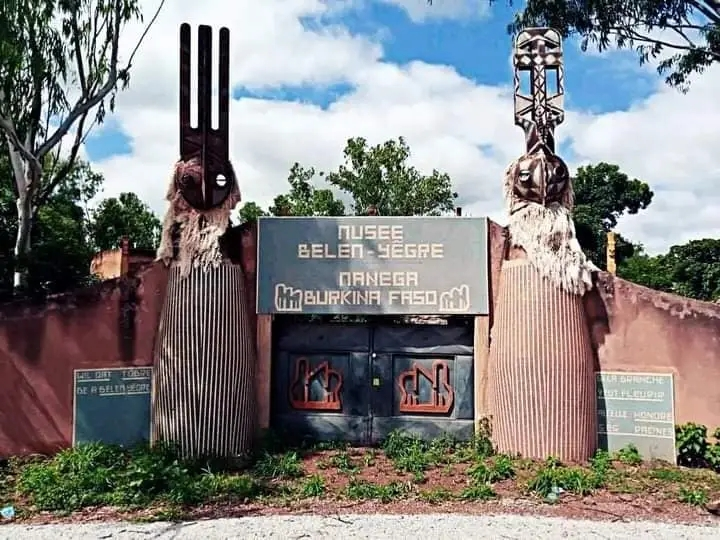

Le musée de la Bendrologie de Nanema
Musée de Bendrologie de Manéga : Un phare de la culture burkinabé Niché dans le village de Manega, à 55 km au nord-ouest de Ouagadougou, se trouve le Musée de Bendrologie de Manéga. Ce musée d' art africain unique a été créé par Frédéric Pacéré Titinga, avocat burkinabé réputé et écrivain prolifique. La passion de Titinga pour la culture de son pays natal transparaît dans ses nombreuses contributions littéraires, et le musée témoigne une fois de plus de son engagement en faveur de la préservation et de la valorisation du patrimoine burkinabé.
Le musee de Nanema : un lieu à visiter absolument !